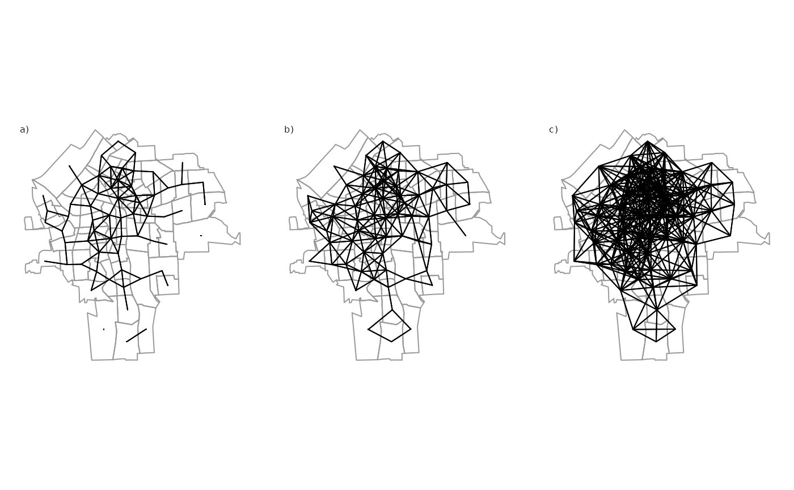
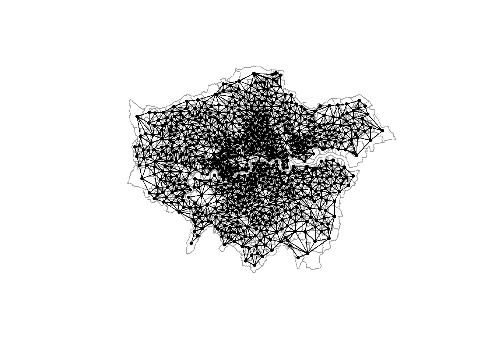
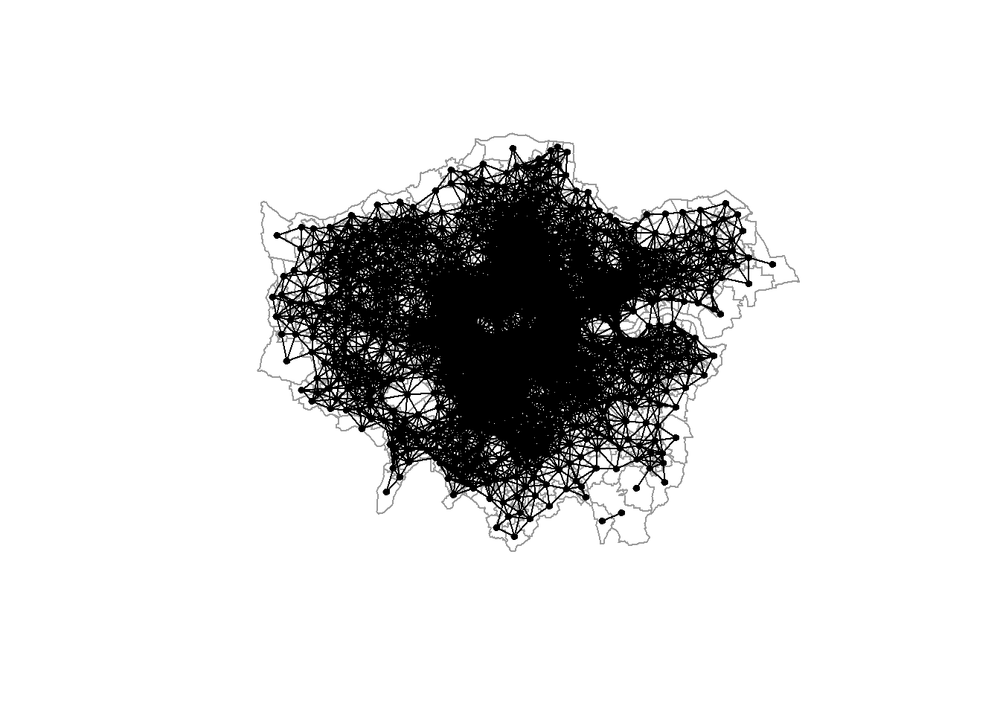
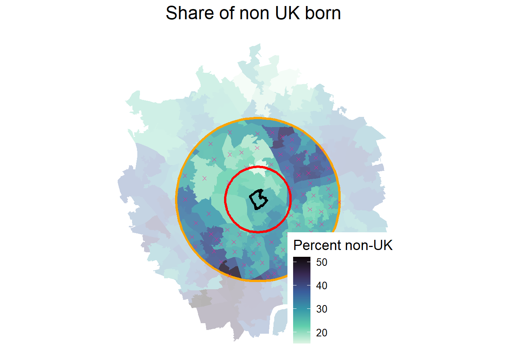

4 Spatial Relationships W
\[ \newcommand{\tr}{\mathrm{tr}} \newcommand{\rank}{\mathrm{rank}} \newcommand{\plim}{\operatornamewithlimits{plim}} \newcommand{\diag}{\mathrm{diag}} \newcommand{\bm}[1]{\boldsymbol{\mathbf{#1}}} \newcommand{\Var}{\mathrm{Var}} \newcommand{\Exp}{\mathrm{E}} \newcommand{\Cov}{\mathrm{Cov}} \newcommand\given[1][]{\:#1\vert\:} \newcommand{\irow}[1]{% \begin{pmatrix}#1\end{pmatrix} } \]
Required packages
Session info
R version 4.6.0 (2026-04-24 ucrt)
Platform: x86_64-w64-mingw32/x64
Running under: Windows 11 x64 (build 26200)
Matrix products: default
LAPACK version 3.12.1
locale:
[1] LC_COLLATE=German_Germany.utf8 LC_CTYPE=German_Germany.utf8
[3] LC_MONETARY=German_Germany.utf8 LC_NUMERIC=C
[5] LC_TIME=German_Germany.utf8
time zone: Europe/Berlin
tzcode source: internal
attached base packages:
[1] stats graphics grDevices utils datasets methods
[7] base
other attached packages:
[1] viridis_0.6.5 viridisLite_0.4.3 ggplot2_4.0.3
[4] tmap_4.4 spatialreg_1.4-3 Matrix_1.7-5
[7] spdep_1.4-2 spData_2.3.5 mapview_2.11.4
[10] sf_1.1-1
loaded via a namespace (and not attached):
[1] tidyselect_1.2.1 dplyr_1.2.1
[3] farver_2.1.2 S7_0.2.2
[5] fastmap_1.2.0 leaflegend_1.2.8
[7] leaflet_2.2.3 TH.data_1.1-5
[9] XML_3.99-0.23 digest_0.6.39
[11] lifecycle_1.0.5 LearnBayes_2.15.2
[13] survival_3.8-6 terra_1.9-27
[15] magrittr_2.0.5 compiler_4.6.0
[17] rlang_1.2.0 tools_4.6.0
[19] data.table_1.18.4 knitr_1.51
[21] htmlwidgets_1.6.4 sp_2.2-1
[23] classInt_0.4-11 RColorBrewer_1.1-3
[25] multcomp_1.4-30 abind_1.4-8
[27] KernSmooth_2.23-26 withr_3.0.2
[29] leafsync_0.1.0 grid_4.6.0
[31] stats4_4.6.0 cols4all_0.10
[33] e1071_1.7-17 leafem_0.2.5
[35] colorspace_2.1-2 spacesXYZ_1.6-0
[37] scales_1.4.0 MASS_7.3-65
[39] cli_3.6.6 mvtnorm_1.3-7
[41] rmarkdown_2.31 generics_0.1.4
[43] otel_0.2.0 rstudioapi_0.18.0
[45] tmaptools_3.3 DBI_1.3.0
[47] proxy_0.4-29 splines_4.6.0
[49] stars_0.7-2 parallel_4.6.0
[51] s2_1.1.11 base64enc_0.1-6
[53] marginaleffects_0.32.0 vctrs_0.7.3
[55] boot_1.3-32 sandwich_3.1-1
[57] jsonlite_2.0.0 crosstalk_1.2.2
[59] units_1.0-1 maptiles_0.11.0
[61] glue_1.8.1 lwgeom_0.2-16
[63] codetools_0.2-20 gtable_0.3.6
[65] deldir_2.0-4 raster_3.6-32
[67] tibble_3.3.1 pillar_1.11.1
[69] logger_0.4.2 htmltools_0.5.9
[71] satellite_1.0.6 R6_2.6.1
[73] wk_0.9.5 microbenchmark_1.5.0
[75] evaluate_1.0.5 lattice_0.22-9
[77] png_0.1-9 backports_1.5.1
[79] class_7.3-23 Rcpp_1.1.1-1.1
[81] gridExtra_2.3 coda_0.19-4.1
[83] nlme_3.1-169 xfun_0.57
[85] pkgconfig_2.0.3 zoo_1.8-15 Reload data from pervious session
load("_data/msoa2_spatial.RData")4.1 Spatial interdependence
We can not only use coordinates and geo-spatial information to connect different data sources, we can also explicitly model spatial (inter)dependence in the analysis of our data. In many instance, accounting for spatial dependence might even be necessary to avoid biased point estimates and standard errors, as observations are often not independent and identically distributed.
Tobler’s first law of geography has been used extensively (11,584 citation in 2023-06) to describe spatial dependence: ‘Everything is related to everything else, but near things are more related than distant things’ (Tobler 1970).
Tobler’s first law is a bit of story
And it has been labeled as an excuse to not think too much about the reasons for spatial dependence or auto-correlation. For instance, measurement error, omitted variables, or inappropriate levels of aggregation are among reasons for auto-correlation (Pebesma and Bivand 2023).
We will come back to the reasons of spatial dependence. However, for now, we are interested in some tools to detect and analyse spatial relations.
To analyse spatial relations, we first need to define some sort of connectivity between units (e.g. similar to network analysis). There are some obvious candidates that be used to define these relations here: adjacency and proximity.
4.2 \(\bm W\): Connectivity between units
The connectivity between units is usually represented in a matrix \(\bm W\). There is an ongoing debate about the importance of spatial weights for spatial econometrics and about the right way to specify weights matrices (LeSage and Pace 2014; Neumayer and Plümper 2016). The following graph shows some possible options in how to define connectivity between units.

In spatial econometrics, the spatial connectivity (as shown above) is usually represented by a spatial weights matrix \({\boldsymbol{\mathbf{W}}}\):
\[ \boldsymbol{\mathbf{W}} = \begin{bmatrix} w_{11} & w_{12} & \dots & w_{1n} \\ w_{21} & w_{22} & \dots & w_{2n} \\ \vdots & \vdots & \ddots & \vdots \\ w_{n1} & w_{n2} & \dots & w_{nn} \end{bmatrix} \]
The spatial weights matrix \(\bm W\) is an \(N \times N\) dimensional matrix with elements \(w_{ij}\) specifying the relation or connectivity between each pair of units \(i\) and \(j\).
Note: The diagonal elements \(w_{i,i}= w_{1,1}, w_{2,2}, \dots, w_{n,n}\) of \(\bm W\) are always zero. No unit is a neighbour of itself. This is not true for spatial multiplier matrices (as we will see later).
4.2.1 Contiguity weights
A very common type of spatial weights. Binary specification, taking the value 1 for neighbouring units (queens: sharing a common edge; rook: sharing a common border), and 0 otherwise.
Contiguity weights \(w_{i,j}\), where
\[ w_{i,j} = \begin{cases} 1 & \text{if $i$ and $j$ neighbours}\\ 0 & \text{otherwise} \end{cases} \]
A contiguity weights matrix with three units, where unit 1 and unit 3 are neighbours, while unit 2 has no neighbours would look like this:
\[ \boldsymbol{\mathbf{W}} = \begin{bmatrix} 0 & 0 & 1 \\ 0 & 0 & 0 \\ 1 & 0 & 0 \end{bmatrix} \nonumber \]
Sparse matrices
Problem of `island’: units without neighbours (if I calculate an average of their neigbours, would that be zero, or NA, or a mean?)
Lets create a contiguity weights matrix (Queens neighbours) for the London MSOAs: we create a neighbours list (nb) using poly2nb(), which is an efficient way of storing \({\boldsymbol{\mathbf{W}}}\). A snap of 1 meter accounts for potential lacks of accuracy between lines and points.
# Contiguity (Queens) neighbours weights
queens.nb <- poly2nb(msoa.spdf,
queen = TRUE, # a single shared boundary point meets the contiguity condition
snap = 1) # we consider points in 1m distance as 'touching'
summary(queens.nb)Neighbour list object:
Number of regions: 983
Number of nonzero links: 5648
Percentage nonzero weights: 0.5845042
Average number of links: 5.745677
Link number distribution:
2 3 4 5 6 7 8 9 10 11 12 13
9 39 130 264 273 169 66 19 5 6 2 1
9 least connected regions:
160 270 475 490 597 729 755 778 861 with 2 links
1 most connected region:
946 with 13 links
# We can also transform this into a matrix W
W <- nb2mat(queens.nb, style = "B")
print(W[1:10, 1:10]) 1 2 3 4 5 6 7 8 9 10
1 0 0 0 0 0 0 0 0 0 0
2 0 0 1 0 0 0 0 0 0 0
3 0 1 0 0 1 0 0 0 0 0
4 0 0 0 0 0 1 0 0 0 1
5 0 0 1 0 0 1 1 0 0 0
6 0 0 0 1 1 0 1 0 1 1
7 0 0 0 0 1 1 0 1 1 0
8 0 0 0 0 0 0 1 0 0 0
9 0 0 0 0 0 1 1 0 0 1
10 0 0 0 1 0 1 0 0 1 0Among those first 10 units that you see above, which are the neighbours of unit number 6?
Why is the diagonal of this matrix all zero?
Overall, the matrix W has dimensions \(N \times N\), a row and a column for each observation. The value in a cell shows how units \(i\) (row number) and \(j\) (column number) are related to each other.
dim(W)[1] 983 983The row and column sums indicate the number of neighbours of each observation.
rowSums(W)[1:10] 1 2 3 4 5 6 7 8 9 10
11 6 7 5 5 6 6 6 6 5 colSums(W)[1:10] 1 2 3 4 5 6 7 8 9 10
11 6 7 5 5 6 6 6 6 5 Adjacency or graph-based neighbour’s weights matrices are usually symmetric. If unit 1 is a neighbour of unit 55, then unit 55 is also a neighbour of unit 1.
Your neighbours have neighbours too, and they are called higher (second) order neighbours. The neighbours of your neighbour’s neighbours are third order neighbours.
You can use nblag() to calculate higher order neighbour relations.
4.2.2 Distance based weights
Another common type uses the distance \(d_{ij}\) between each unit \(i\) and \(j\).
- Inverse distance weights \(w_{i,j} = \frac{1}{d_{ij}^\alpha}\), where \(\alpha\) define the strength of the spatial decay.
\[ \boldsymbol{\mathbf{W}} = \begin{bmatrix} 0 & \frac{1}{d_{ij}^\alpha} & \frac{1}{d_{ij}^\alpha} \\ \frac{1}{d_{ij}^\alpha} & 0 & \frac{1}{d_{ij}^\alpha} \\ \frac{1}{d_{ij}^\alpha} & \frac{1}{d_{ij}^\alpha} & 0 \end{bmatrix} \nonumber \]
Dense matrices
Specifying thresholds may be useful (to get rid of very small non-zero weights)
For now, we will just specify a neighbours list with a distance threshold of 3km using dnearneigh(). An alternative would be k nearest neighbours using knearneigh(). We will do the inverse weighting later.
# Crease centroids
coords <- st_geometry(st_centroid(msoa.spdf))Warning: st_centroid assumes attributes are constant over
geometries# Neighbours within 3km distance
dist_3.nb <- dnearneigh(coords, d1 = 0, d2 = 3000)Warning in dnearneigh(coords, d1 = 0, d2 = 3000): neighbour object
has 2 sub-graphssummary(dist_3.nb)Neighbour list object:
Number of regions: 983
Number of nonzero links: 22086
Percentage nonzero weights: 2.285652
Average number of links: 22.46796
2 disjoint connected subgraphs
Link number distribution:
1 2 3 4 5 6 7 8 9 10 11 12 13 14 15 16 17 18 19 20 21 22
4 3 7 13 11 14 14 17 26 22 26 30 33 34 46 34 59 43 38 30 25 19
23 24 25 26 27 28 29 30 31 32 33 34 35 36 37 38 39 40 41 42 43 44
22 15 21 14 23 17 17 23 28 19 26 24 29 24 27 25 22 18 8 10 12 5
45 46 47
3 2 1
4 least connected regions:
158 160 463 959 with 1 link
1 most connected region:
545 with 47 links
And you can see that the matrix is not so sparse anymore:
W2 <- nb2mat(dist_3.nb, style = "B")
W2[1:10, 1:10] 1 2 3 4 5 6 7 8 9 10
1 0 0 0 0 0 0 0 0 0 0
2 0 0 1 0 1 0 0 0 0 0
3 0 1 0 0 1 1 1 0 0 0
4 0 0 0 0 1 1 1 0 1 1
5 0 1 1 1 0 1 1 1 1 1
6 0 0 1 1 1 0 1 1 1 1
7 0 0 1 1 1 1 0 1 1 1
8 0 0 0 0 1 1 1 0 1 0
9 0 0 0 1 1 1 1 1 0 1
10 0 0 0 1 1 1 1 0 1 04.3 Normalization of \({\boldsymbol{\mathbf{W}}}\)
Normalizing ensures that the parameter space of the spatial multiplier is restricted to \(-1 < \rho > 1\), and the multiplier matrix is non-singular (don’t worry, more on this later).
The main message: Normalizing your weights matrix is always a good idea. Otherwise, the spatial parameters might blow up – if you can estimate the model at all. It also ensure easy interpretation of spillover effects.
Again, how to normalize a weights matrix is subject of debate (LeSage and Pace 2014; Neumayer and Plümper 2016).
4.3.1 Row-normalization
Row-normalization divides each non-zero weight by the sum of all weights of unit \(i\), which is the sum of the row.
\[ \frac{w_{ij}}{\sum_j^n w_{ij}} \]
With contiguity weights, spatially lagged variables contain mean of this variable among the neighbours of \(i\)
Proportions between units such as distances get lost (can be bad!)
Can induce asymmetries: \(w_{ij} \neq w_{ji}\)
For instance, we can use row-normalization for the Queens neighbours created above, and create a neighbours list with spatial weights.
queens.lw <- nb2listw(queens.nb,
style = "W") # W ist row-normalization
summary(queens.lw)Characteristics of weights list object:
Neighbour list object:
Number of regions: 983
Number of nonzero links: 5648
Percentage nonzero weights: 0.5845042
Average number of links: 5.745677
Link number distribution:
2 3 4 5 6 7 8 9 10 11 12 13
9 39 130 264 273 169 66 19 5 6 2 1
9 least connected regions:
160 270 475 490 597 729 755 778 861 with 2 links
1 most connected region:
946 with 13 links
Weights style: W
Weights constants summary:
n nn S0 S1 S2
W 983 966289 983 355.1333 4017.47To see what happened, let’s look at our example in matrix format again.
# transform into matrix with row-normalization
W_norm <- nb2mat(queens.nb, style = "W")
print(W_norm[1:10, 1:10]) 1 2 3 4 5 6 7
1 0 0.0000000 0.0000000 0.0000000 0.0000000 0.0000000 0.0000000
2 0 0.0000000 0.1666667 0.0000000 0.0000000 0.0000000 0.0000000
3 0 0.1428571 0.0000000 0.0000000 0.1428571 0.0000000 0.0000000
4 0 0.0000000 0.0000000 0.0000000 0.0000000 0.2000000 0.0000000
5 0 0.0000000 0.2000000 0.0000000 0.0000000 0.2000000 0.2000000
6 0 0.0000000 0.0000000 0.1666667 0.1666667 0.0000000 0.1666667
7 0 0.0000000 0.0000000 0.0000000 0.1666667 0.1666667 0.0000000
8 0 0.0000000 0.0000000 0.0000000 0.0000000 0.0000000 0.1666667
9 0 0.0000000 0.0000000 0.0000000 0.0000000 0.1666667 0.1666667
10 0 0.0000000 0.0000000 0.2000000 0.0000000 0.2000000 0.0000000
8 9 10
1 0.0000000 0.0000000 0.0000000
2 0.0000000 0.0000000 0.0000000
3 0.0000000 0.0000000 0.0000000
4 0.0000000 0.0000000 0.2000000
5 0.0000000 0.0000000 0.0000000
6 0.0000000 0.1666667 0.1666667
7 0.1666667 0.1666667 0.0000000
8 0.0000000 0.0000000 0.0000000
9 0.0000000 0.0000000 0.1666667
10 0.0000000 0.2000000 0.0000000Overall, how many neighbours does unit 9 have (including all columns)? How do you know?
rowSums(W)[9]We can also use the nb object to see which ones the neighbours are. Here, for instance, neighbours of unit 6:
queens.nb[6][[1]]
[1] 4 5 7 9 10 462This fits to what we see in the matrix above.
Note that row-normalization has some undesirable properties when we use some non-contigutiy based neighbour relations, such as distance based neighbours.
The problem: It obscures the proportion due to dividing by a row-specific value.
Let’s construct a hypothetical example
# Subset of 5 units
sub.spdf <- msoa.spdf[c(4, 5, 6, 102, 150), ]
mapview(sub.spdf)We construct the inverse-distance weighted 2 nearest neighbors.
# 2 closest neighbours
sub.coords <- st_geometry(st_centroid(sub.spdf))Warning: st_centroid assumes attributes are constant over
geometriesknn.nb <- knearneigh(sub.coords,
k = 2) # number of nearest neighboursWarning in knearneigh(sub.coords, k = 2): k greater than one-third
of the number of data pointsknn.nb <- knn2nb(knn.nb)
summary(knn.nb)Neighbour list object:
Number of regions: 5
Number of nonzero links: 10
Percentage nonzero weights: 40
Average number of links: 2
Non-symmetric neighbours list
Link number distribution:
2
5
5 least connected regions:
1 2 3 4 5 with 2 links
5 most connected regions:
1 2 3 4 5 with 2 links# listw with inverse-distance based weights
sub.lw <- nb2listwdist(knn.nb,
x = sub.coords, # needed for idw
type = "idw", # inverse distance weighting
alpha = 1, # the decay parameter for distance weighting
style = "raw") # without normalization
W_sub <- listw2mat(sub.lw)
formatC(W_sub, format = "f", digits = 6) 1 2 3 4 5
1 "0.000000" "0.000414" "0.000723" "0.000000" "0.000000"
2 "0.000414" "0.000000" "0.000962" "0.000000" "0.000000"
3 "0.000723" "0.000962" "0.000000" "0.000000" "0.000000"
4 "0.000000" "0.000033" "0.000032" "0.000000" "0.000000"
5 "0.000049" "0.000000" "0.000049" "0.000000" "0.000000"As you can see, units 1, 2, 3 have relatively proximate neighbours (.e.g inverse distance 0.000962: 3 zeros). Units 4 and 5, in contrast, have only very distant neighbours (e.g. inverse distance 0.000049: 4 zeros).
Now, see what happens when we use row-normalization.
sub.lw <- nb2listwdist(knn.nb,
x = sub.coords, # needed for idw
type = "idw", # inverse distance weighting
alpha = 1, # the decay parameter for distance weighting
style = "W") # for row normalization
W_sub <- listw2mat(sub.lw)
formatC(W_sub, format = "f", digits = 6) 1 2 3 4 5
1 "0.000000" "0.364083" "0.635917" "0.000000" "0.000000"
2 "0.300879" "0.000000" "0.699121" "0.000000" "0.000000"
3 "0.429123" "0.570877" "0.000000" "0.000000" "0.000000"
4 "0.000000" "0.507955" "0.492045" "0.000000" "0.000000"
5 "0.499360" "0.000000" "0.500640" "0.000000" "0.000000"All rows sum up to 1, but the strength of the relation is now similar for the distant units 4 and 5, and the proximate units 1, 2, 3.
4.3.2 Maximum eigenvalues normalization
Maximum eigenvalues normalization divides each non-zero weight by the overall maximum eigenvalue \(\lambda_{max}\). Each element of \(\boldsymbol{\mathbf{W}}\) is divided by the same scalar parameter, which preserves the relations.
\[ \frac{\boldsymbol{\mathbf{W}}}{\lambda_{max}} \]
Interpretation may become more complicated
Keeps proportions of connectivity strengths across units (relevant esp. for distance based \(\boldsymbol{\mathbf{W}}\))
We use eigenvalue normalization for the inverse distance neighbours. We use nb2listwdist() to create weight inverse distance based weights and normalize in one step.
coords <- st_geometry(st_centroid(msoa.spdf))Warning: st_centroid assumes attributes are constant over
geometriesidw.lw <- nb2listwdist(dist_3.nb,
x = coords, # needed for idw
type = "idw", # inverse distance weighting
alpha = 1, # the decay parameter for distance weighting
style = "minmax") # for eigenvalue normalization
summary(idw.lw)Characteristics of weights list object:
Neighbour list object:
Number of regions: 983
Number of nonzero links: 22086
Percentage nonzero weights: 2.285652
Average number of links: 22.46796
2 disjoint connected subgraphs
Link number distribution:
1 2 3 4 5 6 7 8 9 10 11 12 13 14 15 16 17 18 19 20 21 22
4 3 7 13 11 14 14 17 26 22 26 30 33 34 46 34 59 43 38 30 25 19
23 24 25 26 27 28 29 30 31 32 33 34 35 36 37 38 39 40 41 42 43 44
22 15 21 14 23 17 17 23 28 19 26 24 29 24 27 25 22 18 8 10 12 5
45 46 47
3 2 1
4 least connected regions:
158 160 463 959 with 1 link
1 most connected region:
545 with 47 links
Weights style: minmax
Weights constants summary:
n nn S0 S1 S2
minmax 983 966289 463.6269 23.92505 1117.636Examples from above: See how this keeps the proportions in our example. Instead of transforming values to sum up to 1 in each row, we now have much smaller values for 4 and 5 then we have for the proximate units 1, 2, 3.
sub.lw <- nb2listwdist(knn.nb,
x = sub.coords, # needed for idw
type = "idw", # inverse distance weighting
alpha = 1, # the decay parameter for distance weighting
style = "minmax") # for eigenvalue normalization
W_sub <- listw2mat(sub.lw)
formatC(W_sub, format = "f", digits = 6) 1 2 3 4 5
1 "0.000000" "0.245687" "0.429123" "0.000000" "0.000000"
2 "0.245687" "0.000000" "0.570877" "0.000000" "0.000000"
3 "0.429123" "0.570877" "0.000000" "0.000000" "0.000000"
4 "0.000000" "0.019663" "0.019047" "0.000000" "0.000000"
5 "0.029099" "0.000000" "0.029174" "0.000000" "0.000000"4.4 Using this method for ego-hoods
Sometimes, we want to add information of the local context to individual-level data (e.g. survey data). We can use the weights matrix above to generate new variables containing summary information about some characteristics of our neighbours, such as the average house price value of our direct neighbour, or the average share of migrants within 3km of the focal unit.
For a practical examples, see for instance Haußmann and Rüttenauer (2024): we test the impact of individual deprivation and neighbourhood deprivation on the likelihood of voting for Brexit. We find that more deprived people are more likely to favour Brexit. Moreover, the effect of individual deprivation is stronger in richer areas - being deprived is more frustrating if you see a lot of well-off people living around you.
Obviously, a crucial question is the the size of the area / the units that we include in creating such a variable. Likely, we could also take into account multiple definition and then do a robustness check with varying distances (Haußmann and Rüttenauer 2024).
See below for an example of such an ego-hood with a 2km buffer, and 5 km buffer. Here, we use dnearneigh() to identify all units that are within 2km - 5km distance to the focal unit. The pink crossed mark the units identified by the weights, and the circles show the distance buffers around the focal unit.
# Id of the focal unit (somewhere around Archway)
focal <- "E02000555"
# Define the centoid of this MSOA
focal.cent <- st_centroid(msoa.spdf[which(msoa.spdf$MSOA11CD == focal), ])Warning: st_centroid assumes attributes are constant over
geometries# Create three buffers
buf1 <- st_buffer(focal.cent, 2000)
buf2 <- st_buffer(focal.cent, 5000)
buf3 <- st_buffer(focal.cent, 7000)
### Neighbours within 2km to 5km distance
dist_2_5.nb <- dnearneigh(coords, d1 = 2000, d2 = 5000)
# Extract the neighbours of unit MSOA11CD
i <- which(msoa.spdf$MSOA11CD == focal)
neighbours <-unlist(dist_2_5.nb[i])
# Define the subsets for plotting
london_filtered1 <- msoa.spdf[buf3, ]
london_filtered2 <- msoa.spdf[buf2, ]
cover <- st_intersection(london_filtered2, buf2)Warning: attribute variables are assumed to be spatially constant
throughout all geometries# Get centroids of all units
cent.sp <- st_centroid(msoa.spdf)Warning: st_centroid assumes attributes are constant over
geometries### Plot the buffers and add the neighbours as cross
mp1_l <-
ggplot() +
geom_sf(data = london_filtered1, aes(fill = per_nonUK), color = NA, alpha = 0.3) +
geom_sf(data = cover, aes(fill = per_nonUK), color = NA, alpha = 0.8) +
geom_sf(data = msoa.spdf[i,], fill = NA, color = "black", linewidth = 1.2) +
geom_sf(data = buf1, fill = NA, color = "red", linewidth = 1.2) +
geom_sf(data = buf2, fill = NA, color = "orange", linewidth = 1.2) +
geom_sf(data = cent.sp[neighbours,], shape = 4, color = "deeppink") +
scale_fill_viridis_c(
option = "G",
direction = -1,
name = "Percent non-UK"
) +
labs(title = "Share of non UK born") +
theme_minimal() +
theme(
legend.position = c(0.8, 0.2),
plot.title = element_text(hjust = 0.5, size = 18),
legend.title = element_text(size = 14),
legend.text = element_text(size = 10),
legend.background = element_rect(fill = "white", color = NA),
panel.grid = element_blank(),
axis.text = element_blank(),
axis.ticks = element_blank()
)
mp1_l 
4.5 Islands / missings
In practice, we often have a problem with islands. If we use contiguity based or distance based neighbour definitions, some units may end up with empty neighbours sets: they just do not touch any other unit and do not have a neighbour within a specific distance. This however creates a problem: what is the value in the neighbouring units?
The zero.policy option in spdep allows to proceed with empty neighbours sets. However, many further functions may run into problems and return errors. It often makes sense to either drop islands, to choose weights which always have neighbours (e.g. k nearest), or impute empty neighbours sets by using the nearest neighbours.